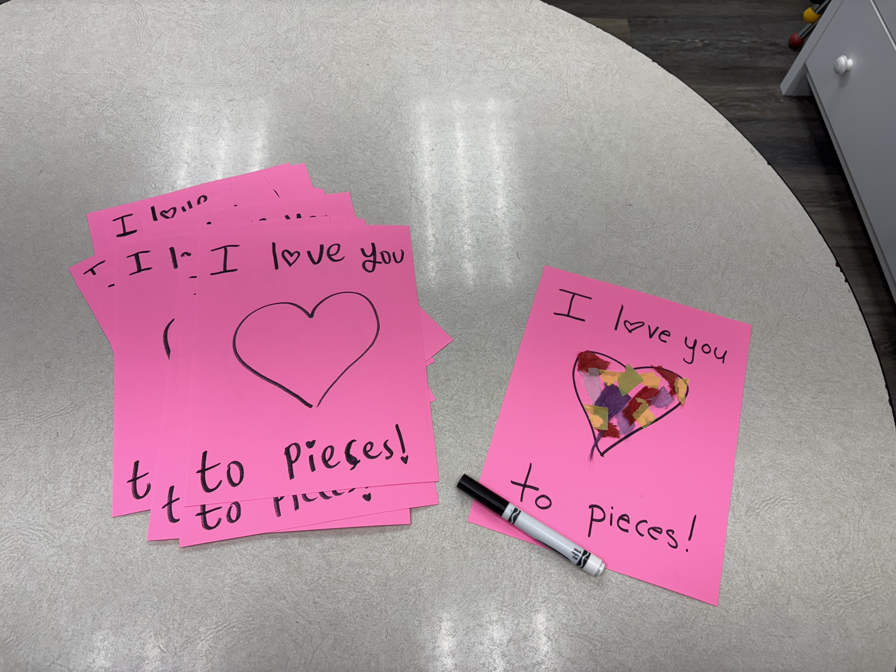

Sunday School Summer: My First Honors Experience (Self-Designed)
Over the course of the summer, I worked with children aged anywhere from one to five years old in order to get more experience working with children! I learned a lot about being there in the way the kids needed me to be, and how to meet them where they're at in life.
One of the biggest lessons that stood out to me from this experience was letting the children teach me. Oftentimes, the other adult volunteers were less aware of certain children's needs, or outright wrong in their approaches to certain situations, so I learned how to act in the way the children needed most in these situations. I learned how to both reign in the chaos for some groups, while enabling a little bit more chaos for the ones who seemed to benefit from it. I learned which children needed someone to stay there consistently for them, and which ones were fine on their own. I learned which ones needed assistance with certain activities, and when to give the freedom to do as they wish to others. Ultimately, it was a very valuable learning experience and I reflect on most of it fondly!
I chose the above sample because, first of all, I'm not going to show any children's faces to the entire internet – that's just creepy. But secondly, I think it gives a better idea of what sort of lessons we did with the children. Many of them involved arts and crafts, and although this is just our sample version, I felt that this one in particular both turned out well but also ended up being a little chaotic. Like, it was a wholesome craft and all – but talk about paper mess! Fortunately we had a broom for situations like these!